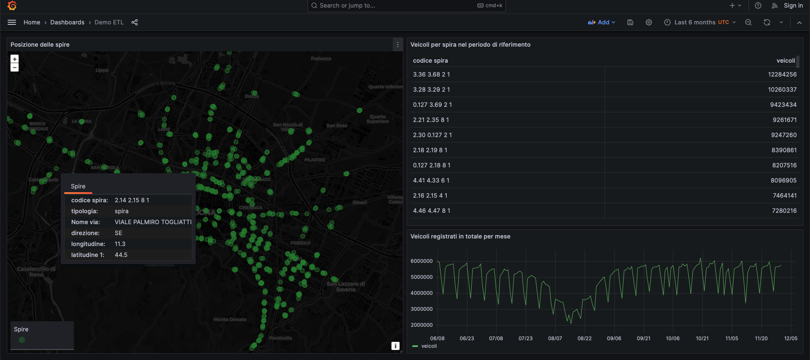

Data transformation and usage with Dremio and Grafana
In this scenario we will learn how to use Dremio to transform data and create some virtual datasets on top of it. Then we will visualize the transformed data in a dashboard created with Grafana.
In order to collect the initial data and make it accessible to Dremio, we will follow the first step of the ETL scenario, in which we download some traffic data and store it in the DigitalHub datalake.
Collect the data
NOTE: the procedure is only summarized here, as it is already described in depth in the ETL scenario introduction and Collect the data pages.
- Access Jupyter from your Coder instance and create a new notebook using the
Python 3 (ipykernel)kernel - Set up the environment and create a project
- Set the URL to the data:
URL = "https://opendata.comune.bologna.it/api/explore/v2.1/catalog/datasets/rilevazione-flusso-veicoli-tramite-spire-anno-2023/exports/csv?lang=it&timezone=Europe%2FRome&use_labels=true&delimiter=%3B"
- Create the
srcfolder, define the download function and register it - Execute it locally and wait for its completion:
project.run_function("download-data", inputs={'url':URL}, local=True)
Access the data from Dremio
Access Dremio from your Coder instance or create a new Dremio workspace. You should see MinIO already configured as an object storage and you should find the downloaded data in a .parquet file at the path minio/datalake/projects/demo-etl/artifacts/download-data-downloader/0/dataset.parquet.
Click on the file to open Dataset Settings, verify that the selected format is Parquet and save it as a Dremio dataset, so that it can be queried.
Now you can see the data either by clicking again on the dataset or via the SQL runner, by executing a query such as:
SELECT *
FROM minio.datalake.projects."demo-etl".artifacts."download-data-downloader"."0"."dataset.parquet"
ORDER BY data, "codice spira"
Create a new Dremio space named demo_etl. We will create three virtual datasets and save them here.
Extract measurement data
Open the SQL runner and execute the following query, which will extract the traffic measurements to save them as a separate dataset:
SELECT "dataset.parquet".data, "dataset.parquet"."codice spira", "00:00-01:00", "01:00-02:00", "02:00-03:00", "03:00-04:00", "04:00-05:00", "05:00-06:00", "06:00-07:00", "07:00-08:00", "08:00-09:00", "09:00-10:00", "10:00-11:00", "11:00-12:00", "12:00-13:00", "13:00-14:00", "14:00-15:00", "15:00-16:00", "16:00-17:00", "17:00-18:00", "18:00-19:00", "19:00-20:00", "20:00-21:00", "21:00-22:00", "22:00-23:00", "23:00-24:00"
FROM minio.datalake.projects."demo-etl".artifacts."download-data-downloader"."0"."dataset.parquet"
Click on the arrow next to Save Script as, select Save View as..., name the new dataset misurazioni and save it in the space demo_etl.
Extract traffic sensors data
Open the SQL runner and execute the following query, which will extract the traffic sensors data (e.g. their geographical position) as a separate dataset:
SELECT DISTINCT "dataset.parquet"."codice spira", "dataset.parquet".tipologia, "dataset.parquet".id_uni, "dataset.parquet".codice, "dataset.parquet".Livello, "dataset.parquet"."codice arco", "dataset.parquet"."codice via", "dataset.parquet"."Nome via", "dataset.parquet"."Nodo da", "dataset.parquet"."Nodo a", "dataset.parquet".stato, "dataset.parquet".direzione, "dataset.parquet".angolo, "dataset.parquet".longitudine, "dataset.parquet".latitudine, "dataset.parquet".geopoint
FROM minio.datalake.projects."demo-etl".artifacts."download-data-downloader"."0"."dataset.parquet"
Click on the arrow next to Save Script as, select Save View as..., name the new dataset spire and save it in the space demo_etl.
Transform hourly measurements into daily measurements
Open the SQL runner and execute the following query, which will sum the measurement columns, each corresponding to an hour, to obtain the daily value and save it as a new dataset:
SELECT data, "codice spira", "00:00-01:00"+"01:00-02:00"+"02:00-03:00"+"03:00-04:00"+"04:00-05:00"+"05:00-06:00"+"06:00-07:00"+"07:00-08:00"+"08:00-09:00"+"09:00-10:00"+"10:00-11:00"+"11:00-12:00"
+"12:00-13:00"+"13:00-14:00"+"14:00-15:00"+"15:00-16:00"+"16:00-17:00"+"17:00-18:00"+"18:00-19:00"+"19:00-20:00"+"20:00-21:00"+"21:00-22:00"+"22:00-23:00"+"23:00-24:00" AS totale_giornaliero
FROM (
SELECT * FROM "demo_etl".misurazioni
) nested_0;
Click on the arrow next to Save Script as, select Save View as..., name the new dataset misurazioni_giornaliere and save it in the space demo_etl.
Connect Grafana to Dremio
Access Grafana from your Coder instance or create a new Grafana workspace. Open the left menu and navigate to Connections - Data Sources. Add a new Dremio data source configured as follows:
- Name:
Dremio - URL: the Internal Endpoint you see on Coder for your Dremio workspace
- User:
admin - Password:
<dremio_password_set_on_coder>
Now you can create a dashboard to visualize Dremio data.
An example dashboard is available as a JSON file at the user/examples/dremio_grafana path within the repository of this documentation. In order to use it, you can import it in Grafana instead of creating a new dashboard. You will need to update the datasource.uid field, which holds a reference to the Dremio data source in your Grafana instance, throughout the JSON model. The easiest way to obtain your ID is by navigating to the data source configuration page and copying it from the URL:
https://<grafana_host>/connections/datasources/edit/<YOUR_DATASOURCE_ID>
The dashboard includes three panels: a map of the traffic sensors, a table with the daily number of vehicles registered by each sensor and a graph of the vehicles registered monthly.

We can now use the dashboard to explore the data. We can either interact with the map to get the information related to each sensor, or use the dashboard filters to select different time ranges and analyze traffic evolution over time.